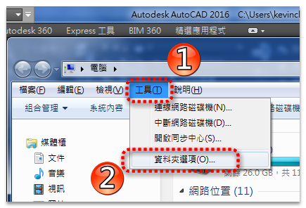
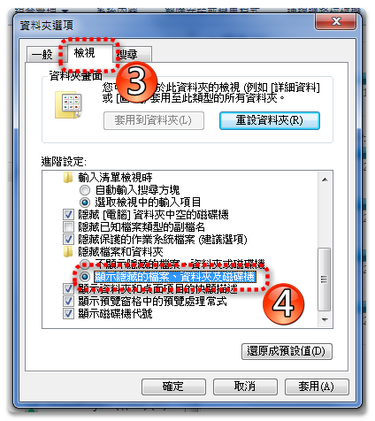

一般使用者在 AutoCAD 2004 以上版本會找不到相關「程式檔及路徑」，因為cad系統資料夾是隱藏的請使用方法一即可找到。
檔案總管 → 工具 → 資料夾選項 → 「檢視」標籤 → 進階設定 →
□ 隱藏已知檔案類型的副檔名 .....把打勾取消
○ 顯示所有檔案及資料夾..........點選選擇


「選項」對話方塊 OPTIONS → 「檔案」標籤 → 支援檔搜尋路徑
「選項」對話方塊 OPTIONS → 「檔案」標籤 → 文字編輯器、字典以及字體檔名 → 字體對映檔
註：可把以上支援檔搜尋路徑及字體對映檔入徑，複製下來到檔案總管的網址直接貼上即可找到。
◆AutoCAD 2004功能表檔 - 32位元 (acad.mns) 位置:
C:\Documents and Settings\"USER帳號名稱"\Application Data\Autodesk\AutoCAD 2004\R16.0\cht\Support
◆AutoCAD 2006自訂檔 - 32位元 (acad.cui) 位置:
C:\Documents and Settings\"USER帳號名稱"\Application Data\Autodesk\AutoCAD 2006\R16.2\cht\Support
◆AutoCAD 2010自訂檔 - 64位元 (acad.cuix) 位置:
C:\Users\使用者登入帳號\appdata\roaming\autodesk\autocad 2010\r18.0\cht\support
◆AutoCAD 2016自訂檔 - 64位元 (acad.cuix) 位置:
C:\Users\使用者登入帳號\appdata\roaming\autodesk\autocad 2016\r20.1\cht\support
在 AutoCAD 2004 和 AutoCAD 2006 中，某些支援檔的預設位置已變更。 若要取得有關這些檔案預設位置的資訊，請參閱 尋找自訂檔案 。
支援檔包括以下檔案：
規劃檔 (acad2006.cfg)
自訂檔 (acad.cui)
說明及雜項檔
字體對映檔 (acad.fmp)
替代字體檔 (simplex.shx)
支援路徑檔 (acad.dcl、acad.lin、acad.mln、acad.pat、acad.pgp、acad.psf、acad.unt、acadiso.lin、acadiso.pat、ase.dc、base.dcl、dbcon.cui、doshelp.dcl 和 gdt.shx)
註 在某些作業系統中，位於個案設定中的資料夾預設為隱藏。 若要顯示這些檔案，您可能需要變更顯示設定。 在「開始」功能表中，按一下「控制台」「資料夾選項」。 在「資料夾選項」對話方塊的「檢視」標籤中，按一下「顯示隱藏的檔案和資料夾」。
資料來源:AutoCAD 2006 說明